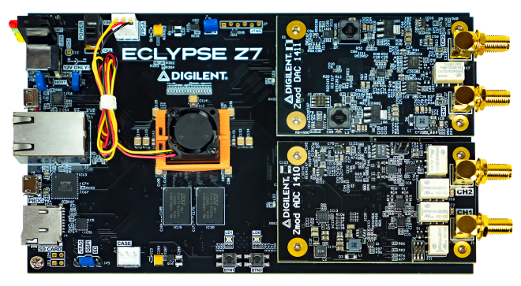
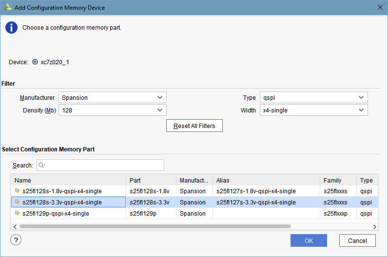
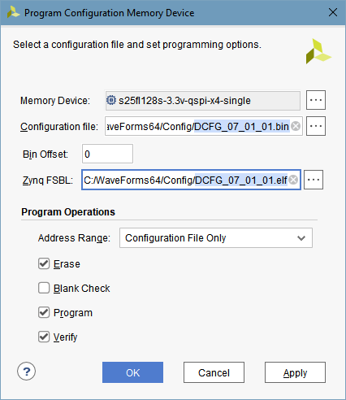
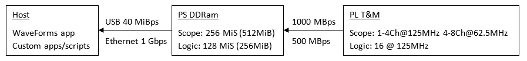
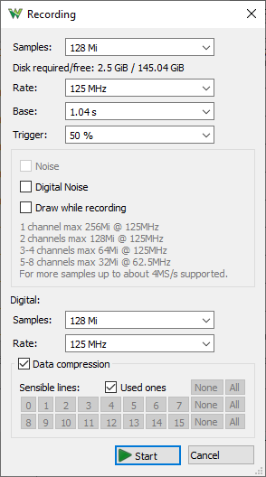
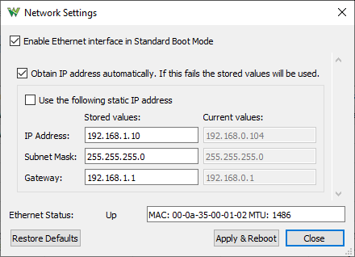
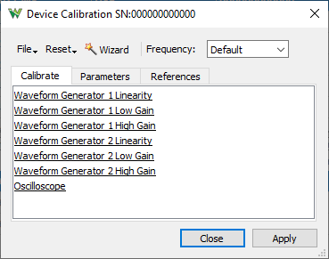
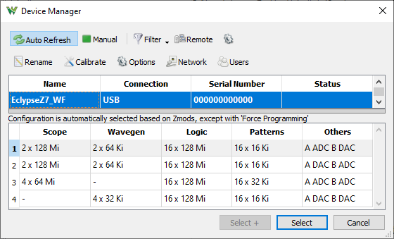
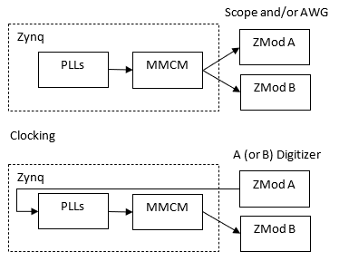
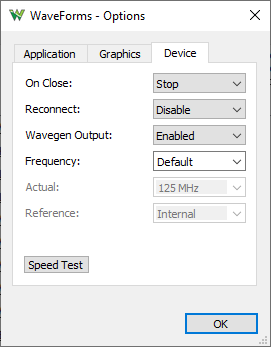

The supported Zmods are the following:
The WaveForms support for Eclypse Z7 and Zmods is closed source, including the application, API library, firmware and FPGA configurations. It can be used with WaveForms application and SDK/API from a computer.
For open source application see the Resource Center.
In order to use the Eclypse Z7 and Zmods with WaveForms the following firmware needs to be booted from the SD card or QSPI flash. These are deployed by the WaveForms installer and can be found in the following paths:

The DCFG_07_01_01.bin file is just a firmware/PS image providing USB and Ethernet WaveForms connection. The PL will be programmed only on software connection to the device, so the green FPGA/PL DONE LED on the Eclypse Z7 will light up only on WaveForms application connection or custom WF SDK/API open function call.
The unit can be used as instrumentation device over USB and Ethernet with WaveForms application or custom application based on WF SDK.
Most of the device embedded DDR RAM is used as Scope and Logic Analyzer buffer.


The device will reboot in the following cases:
- when the USB device cable is disconnected or on USB detach, like when the computer goes to sleep
- when the Ethernet cable is disconnected or link goes down for at least 5 seconds and there is not active USB software connection
The Network Settings lets you configure the Ethernet port. By default the Ethernet is disabled but it can be enabled with USB connection.
The Enable Ethernet interface is recommended to be unchecked if it is not used to speed up the device boot time. Having this enabled but no link it will block the firmware for a few seconds at startup.
The computer from which the device is used should be connected to the same network. On Windows make sure the network profile is Private.
When Obtain IP address automatically is checked the device will try to obtain IP address from DHCP server, it this fails the specified IP settings are used.
The Use the following static IP address should be checked when fixed IP is required or the device is connected directly to the computer in order to skip auto-configuration to speed up the connection time.
In this case the same subnet but different IP should be configured on the computer port too, like 192.168.2.10/255.255.255.0 and 192.168.2.11/255.255.255.0
Also make sure the subnet address (192.168.2) is not in conflict with subnets of the other ports of the computer.
The values on the left are the stored values and on the right, the read-only fields, show the current values.

The Remote Devices is intended to manage devices that are not discoverable like on a remote VPN. These entries are stored in current users folder unecrypted. For security concern the user name and password can be left empty and these will be asked when connecting to the device.

The Device Users lets you manage the accounts on a device. Up to 20 users can be added for a device. When the authentication is enabled connection to the device over network is only allowed with stored account. Login with Admin users can manage the users list. Without Admin right the user is only allowed to use the device and change its password.
When Authentication is enabled only admin users are allowed to edit Users list, Rename the device, Network and Boot settings.
The USB connection to a device is implicit admin, no authentication is required.


When connecting to a network device with enabled authentication the entered user and password can be remembered locally.
The Local Passwords lets you manage the stored device credentials. These are stored in local user directory with encrypted passwords.


See Installer Details for information about different command line options to install WaveForms.
See WaveForms for more information on using the WaveForms software.
Each Zmod is calibrated at the factory during the manufacturing test procedure. The calibration data is stored in the Zmod's non-volatile memory.
The Calibrate tab lists the available calibration modules and can be used to launch them. The Parameters tab shows calibration data of the main modules. The References tab lets you review the last performed calibration steps.

The number of Oscilloscope and Wavegen channels and capabilities depend on the loaded Zmods.
There are 4 configurations (FPGA/PL images) provided to support combinations of Zmod Scope/Digitizer (ADC) or AWG (DAC) loaded in ZMOD A and B. The suitable configuration is automatically selected based on the loaded Zmods.
Note that the software does not support combining Scope and Digitizer Zmods.

The Zmods will run at the same frequency which is by default the lowest from the Zmods but it is adjustable under Settings/ Options/ Device menu.
The Reference clock option is for the Zmod Digitizer's CDCE input. When only one of the Zmods is Digitizer and the Reference clock option is Internal the oscillator on this will be used to drive the ADC through the CDCE IC. The system and the other Zmod will be driven by the clock received from the Digitizer Zmod's ADC. In other chases the Zmods ADC/DAC are driven by the clock synthesized in the Eclypse Z7 Zynq directly for Zmod Scope and AWG, and through the CDCE IC on the Zmod Digitizer.

For more information visit the Resource Center
The Eclypse Pmod ports A0-7 and B0-7 can be used as 16 digital I/Os (DIO 0-15).
These are LVCMOS3V3 with 8mA drive and slow slew rate.
The DIO 14 and 15 can be also used as trigger IO. When such output is enabled it will override the control from Static IO or Pattern Generator.